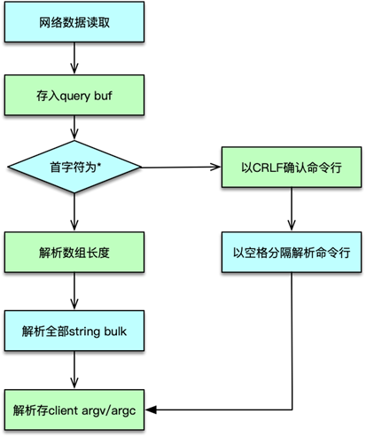
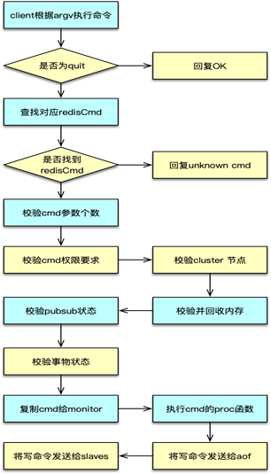

- 00 开篇寄语：缓存，你真的用对了吗？.md
- 01 业务数据访问性能太低怎么办？.md
- 02 如何根据业务来选择缓存模式和组件？.md
- 03 设计缓存架构时需要考量哪些因素？.md
- 04 缓存失效、穿透和雪崩问题怎么处理？.md
- 05 缓存数据不一致和并发竞争怎么处理？.md
- 06 Hot Key和Big Key引发的问题怎么应对？.md
- 07 MC为何是应用最广泛的缓存组件？.md
- 08 MC系统架构是如何布局的？.md
- 09 MC是如何使用多线程和状态机来处理请求命令的？.md
- 10 MC是怎么定位key的.md
- 11 MC如何淘汰冷key和失效key.md
- 12 为何MC能长期维持高性能读写？.md
- 13 如何完整学习MC协议及优化client访问？.md
- 14 大数据时代，MC如何应对新的常见问题？.md
- 15 如何深入理解、应用及扩展 Twemproxy？.md
- 16 常用的缓存组件Redis是如何运行的？.md
- 17 如何理解、选择并使用Redis的核心数据类型？.md
- 18 Redis协议的请求和响应有哪些“套路”可循？.md
- 19 Redis系统架构中各个处理模块是干什么的？.md
- 20 Redis如何处理文件事件和时间事件？.md
- 21 Redis读取请求数据后，如何进行协议解析和处理.md
- 22 怎么认识和应用Redis内部数据结构？.md
- 23 Redis是如何淘汰key的？.md
- 24 Redis崩溃后，如何进行数据恢复的？.md
- 25 Redis是如何处理容易超时的系统调用的？.md
- 26 如何大幅成倍提升Redis处理性能？.md
- 27 Redis是如何进行主从复制的？.md
- 28 如何构建一个高性能、易扩展的Redis集群？.md
- 29 从容应对亿级QPS访问，Redis还缺少什么？.md
- 30 面对海量数据，为什么无法设计出完美的分布式缓存体系？.md
- 31 如何设计足够可靠的分布式缓存体系，以满足大中型移动互联网系统的需要？.md
- 32 一个典型的分布式缓存系统是什么样的？.md
- 33 如何为秒杀系统设计缓存体系？.md
- 34 如何为海量计数场景设计缓存体系？.md
- 35 如何为社交feed场景设计缓存体系？.md
21 Redis读取请求数据后，如何进行协议解析和处理
你好，我是你的缓存课老师陈波，欢迎进入第 21 课时“Redis 协议解析及处理”的学习。上一课时，我们学习了 Redis 事件驱动模型，接下来，看一下 Redis 是如何进行协议解析及处理的。
Redis 协议解析及处理
协议解析
上一课时讲到，请求命令进入，触发 IO 读事件后。client 会从连接文件描述符读取请求，并存入 client 的 query buffer 中。client 的读缓冲默认是 16KB，读取命令时，如果发现请求超过 1GB，则直接报异常，关闭连接。

client 读取完请求命令后，则根据 query buff 进行协议解析。协议解析时，首先查看协议的首字符。如果是 *，则解析为字符块数组类型，即 MULTIBULK。否则请求解析为 INLINE 类型。
INLINE 类型是以 CRLF 结尾的单行字符串，协议命令及参数以空格分隔。解析过程参考之前课程里分析的对应协议格式。协议解析完毕后，将请求参数个数存入 client 的 argc 中，将请求的具体参数存入 client 的 argv 中。
协议执行
请求命令解析完毕，则进入到协议执行部分。协议执行中，对于 quit 指令，直接返回 OK，设置 flag 为回复后关闭连接。

对于非 quit 指令，以 client 中 argv[0] 作为命令，从 server 中的命令表中找到对应的 redisCommand。如果没有找到 redisCommand，则返回未知 cmd 异常。如果找到 cmd，则开始执行 redisCommand 中的 proc 函数，进行具体命令的执行。在命令执行完毕后，将响应写入 client 的写缓冲。并按配置和部署，将写指令分发给 aof 和 slaves。同时更新相关的统计数值。
© 2019 - 2023 Liangliang Lee. Powered by gin and hexo-theme-book.